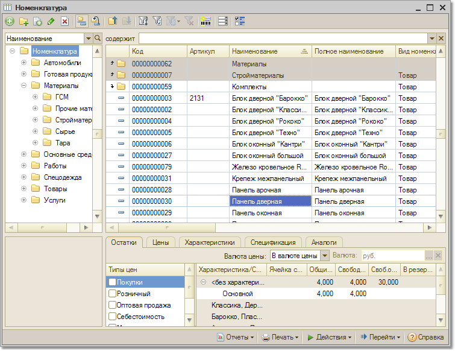
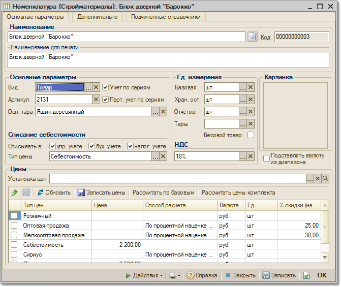
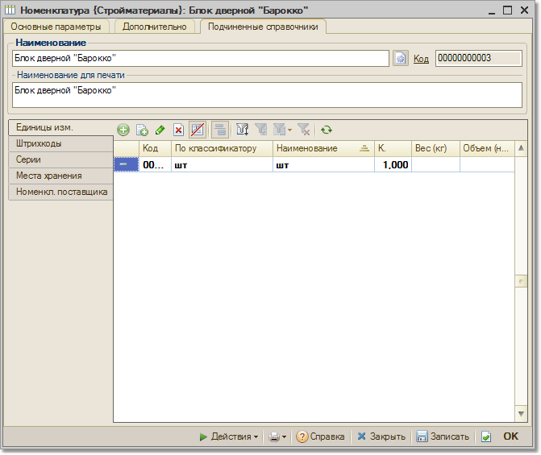
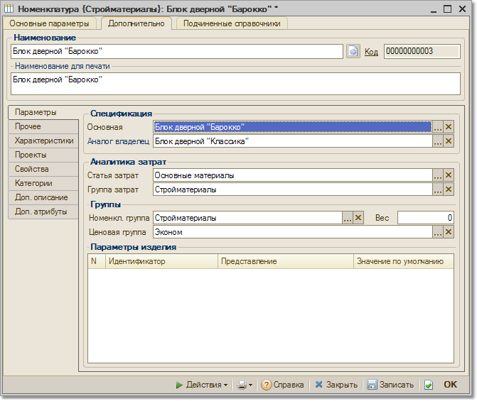

Справочник "Номенклатура" предназначен для хранения информации о товарах, комплектах, наборах, возвратной таре, услугах. Жесткого деления на такие категории нет, выделяются лишь товары, услуги и наборы (наборы-комплекты и наборы-пакеты). Категория товара определяется в момент поступления номенклатуры на предприятие. Информация о видах номенклатуры хранится в отдельном справочнике "Виды номенклатуры".
Пользователь может добавить в этот справочник любую информацию, однако при добавлении нового вида номенклатуры он может использовать только следующие типы номенклатуры: Товар, Набор-комплект, Набор-пакет, Услуга.
Важно! Следует обратить внимание на тот факт, что после использования позиции номенклатуры в документе изменить тип номенклатуры (товар, услуга, набор-пакет, набор-комплект) нельзя.

Товар
Товаром может являться не только купленная номенклатурная позиция или позиция номенклатуры, принятая на комиссию, но и те номенклатурные позиции, которые обычно проходят предпродажную подготовку (комплектацию, разукомплектацию).
Такие позиции в дальнейшем будем называть комплектами. После предпродажной подготовки эти номенклатурные позиции становятся обычным товаром. Поэтому информация о номенклатурной позиции (комплекте) заполняется с типом — товар.
С комплектом могут производиться действия, присущие обычному товару: поступление комплекта на склад, резервирование комплекта, продажа комплекта и т.д. Является ли товар комплектом, определяется только тем, заполнен ли для него список комплектующих (закладка "Комплектующие"), из которых он состоит.
Товаром также является возвратная тара. Любой товар, введенный в справочник номенклатуры, может являться возвратной тарой. Является ли номенклатурная позиция возвратной тарой, определяется в момент оформления документов поступления и отгрузки товаров. Информация о возвратной таре заполняется на отдельной закладке "Тара" в документе. Для удобства работы с тарой для нее может быть определен дополнительный вид номенклатуры "Возвратная тара", однако тип номенклатуры при этом должен быть – товар.
Услуги
По услугам не ведется складской учет, учет по сериям, не указывается вес, не ведется учет ГТД, не ведется учет серийных номеров. Информация об услугах заполняется в документах на отдельной закладке "Услуги".
Набор-комплект
Номенклатурная позиция с типом номенклатуры "набор-комплект" служит для удобного оформления операций продажи комплектов, не требующих длительной сборки. Набор-комплект не хранится на складе, процесс комплектации происходит в момент отгрузки товаров покупателю. На закладке "Комплектующие" заполняется состав набора-комплекта. На набор-комплект могут быть назначены цены, отличные от суммарной цены комплектующих, входящих в его состав.
Набор-комплект вводится в табличную часть документов на закладке "Товары" как обычный товар. Для того чтобы набор-комплект отличался от обычных товаров в табличной части документа, он помечается пиктограммой. Такой же пиктограммой помечена кнопка "Состав набора". Нажав на эту кнопку, можно посмотреть и изменить список комплектующих, входящих в состав набора-комплекта. При необходимости список комплектующих можно заранее не задавать, а вводить этот список непосредственно при оформлении документа. При проведении документа реализации со склада списываются те комплектующие, которые входят в набор-комплект (указаны на закладке "Состав набора"), а по регистру продажи фиксируется продажа набора-комплекта, при этом себестоимость этого набора-комплекта рассчитывается как сумма себестоимостей комплектующих, входящих в его состав.
Набор-пакет
Номенклатура с типом "набор-пакет" используется для быстрого заполнения табличной части документа теми товарами (комплектующими), которые входят в состав набора (указаны на закладке "Комплектующие"). По наборам-пакетам не ведется количественный и суммовой учет. Например, в качестве набора можно использовать набор мебели или подарочный набор, состоящий из различных кондитерских изделий. Наборы-пакеты можно также использовать в том случае, если различным покупателям постоянно отгружаются одни и те же товары. Тогда эти товары можно объединить в различные наборы-пакеты и использовать их для быстрого заполнения табличной части документа. Для наборов-пакетов не ведется учет по характеристикам, однако в состав набора-пакета могут входить товары, имеющие различные характеристики.
При описании объекта номенклатуры необходимо определить ряд дополнительных свойств. Часть из них будут в дальнейшем использоваться в качестве значений по умолчанию при подстановках в реквизиты документов, т.е. такие свойства задаются не жестко и могут быть переопределены в любой момент.
Информация о позиции номенклатуры располагается на нескольких закладках. Имеется возможность настройки видимости закладок и установки видимости и обязательности заполнения реквизитов на различных закладках (кнопка "Настройка"). Видимость закладок, а также видимость и обязательность заполнения реквизитов можно установить индивидуально для каждого пользователя, в зависимости от того, за заполнение каких именно реквизитов ответственен данный пользователь
Для каждой позиции номенклатуры в справочнике можно посмотреть информацию об остатках на складе, место хранения номенклатуры и информацию о ценах. Для показа дополнительной информации в списке, необходимо выбрать пункт меню "Действия" - "Остатки товаров на складах" (установить флаг показа остатков).
Непосредственно из справочника номенклатуры можно произвести печать этикеток и ценников для конкретного товара или для группы номенклатуры (кнопка "Печать"). Используя эту кнопку можно также распечатать прайс-лист для группы товаров и список комплектующих, для тех позиций, для которых определен состав комплектующих.
С помощью кнопки "Отчеты" можно получить разнообразные отчеты: по продаже конкретного товара или группы товаров, по прибыли, полученной от продажи товаров. Можно также произвести анализ доступности товаров, посмотреть информацию о текущих резервах товаров, проанализировать движение товаров с помощью отчета "Ведомость товаров на складах".
Карточка товара
Закладка "Основные параметры"
Важно! Флаги ведения учета по сериям и характеристикам в форме номенклатуры появляются только в том случае, если на предприятии ведется учет по сериям и характеристикам, что указывается в настройках параметров учета.
Каждая позиция номенклатуры характеризуется базовой единицей измерения. Кроме базовой единицы измерения, позиция номенклатуры может иметь необходимое число других единиц измерения (упаковок). Например, сигареты могут иметь единицы измерения: "штука", "пачка", "блок", "коробка". Каждая единица измерения (упаковка) имеет свой коэффициент пересчета относительно базовой единицы. Единица измерения имеет свой штрихкод, свой вес и объем.
Для хранения данных о единицах измерения в конфигурации существует справочник "Единицы измерения", подчиненный справочнику "Номенклатура". Информация о единицах измерения заполняется на закладке "Единицы измерения". При заполнении информации о единице измерения используется справочник "Классификатор единиц измерения". В этот справочник заносится общий список применяемых торговым предприятием единиц измерения.

Цены
- табличная часть, отражающая данные о ценах на данный товар во всех существующих типах цен. Она становится доступной только после записи элемента справочника.Важно. При задании цен с использованием карточки номенклатуры цены задаются одинаковые для всех характеристик товара.
Закладка "Подчиненные справочники"
Данная закладка предназначена для работы со значениями подчиненных справочников для отдельной номенклатурной единицы.

Штрихкоды для товаров детализируются до уровня единиц измерения товара, характеристик и серий товаров. То есть для каждого товара, имеющего определенную характеристику, серию и единицу измерения можно задать отдельный штрихкод. При формировании товаров также можно использовать такой параметр, как качество товаров. То есть для некондиционного товара, можно задать свой штрихкод.
В конфигурации поддерживается работа по заполнению товаров с помощью сканера штрихкода для товаров со штрихкодами любых типов. Для ручного поиска товаров по штрихкоду в списке номенклатуры можно использовать клавишу F7 ("Поиск по штрихкоду").
Список типов штрихкодов задается в объекте план видов характеристик "Типы штрих-кодов". Для ввода и редактирования этот объект вызывается при задании нового типа штрихкода для товара. При вводе нового штрихкода можно указать тот тип штрихкода, который будет заполняться по умолчанию. Новый штрихкод можно задать вручную или сформировать автоматически, нажав на кнопку "Новый штрихкод". Автоматически сформированный штрихкод всегда имеет тип EAN-13. Новый штрихкод для товара формируется в соответствии с настройками, заданными для формирования штрихкода в настройках параметров учета. В карточке товара печать этикеток производится при нажатии на кнопку "Печать" — "Этикетки".
Печать этикеток может производиться как из списка номенклатуры, так и из документов, сопровождающих поступление товаров или изменение цен ("Поступление товаров и услуг", "Перемещение товаров", "Установка цен номенклатуры" и т.д.) Во всех этих случаях используется одна и та же обработка "Печать этикеток".
Важно. При печати этикеток используется элемент управления "1С:Печать штрих-кодов". Для того чтобы печать этикеток была доступна, необходимо установить элемент управления "1С:Печать штрих-кодов". Элемент управления "1С:Печать штрих-кодов" необходимо установить с диска ИТС (Методическая поддержка 1С:Предприятия 8 — Работа с торговым оборудованием — Программное обеспечение для подключения торгового оборудования — 1С — Элемент управления "1С:Печать штрих-кодов").
Закладка "Дополнительно"
На данной закладке содержатся дополнительные закладки с реквизитами товаров:
Закладка "Параметры"

Закладка "Прочее"
В табличной части на этой закладке вводится информация о принадлежности номенклатуры к определенному проекту или виду распределения по проектам. В разные периоды времени номенклатура может относиться к разным проектам. Информация, введенная на этой закладке, сохраняется в регистре сведений "Установка проектов для номенклатуры" и используется в учете по проектам.
Закладка "Номенклатура поставщика"
Закладка становится видимой, если на закладке "Дополнительные" заполнен реквизит "Основной поставщик".
На закладке "Номенклатура поставщика" можно задать цены поставщика и указать документ "Установка цен номенклатуры контрагентов", в который требуется добавить цены поставщика на редактируемую позицию номенклатуры. Если документ не выбран, то при попытке записи цен поставщика (кнопка "Записать цены") программа предложит создать новый документ.
На этой закладке в соответствующих полях может быть указана информация о номенклатуре поставщика (артикул, код, наименование). То есть можно ввести информацию о том, как называется данная позиция номенклатуры в информационной базе поставщика. Эта информация будет записана в регистр сведений "Номенклатура контрагентов" при записи цен.
Закладка "Свойства"
Для элементов номенклатуры можно задать дополнительные аналитические признаки – свойства и категории номенклатуры. В разрезе дополнительных свойств не ведутся складские остатки, эта информация используется лишь для отбора элементов номенклатуры или группировок в отчетах.
Значения свойств могут выбираться пользователем из справочников, перечислений и т.д. Одной позиции номенклатуры можно присвоить множество значений свойств. В отчетах можно детализировать информацию до уровня значений свойств номенклатуры. Можно отобрать данные сразу по нескольким значениям свойств. Список свойств, присвоенных позиции номенклатуры, можно просмотреть и отредактировать на закладке "Свойства" в форме позиции номенклатуры.
Закладка "Категории"
Предусмотрена возможность присвоения позициям номенклатуры определенных категорий. Список категорий, присвоенных позиции номенклатуры, можно просмотреть и отредактировать на закладке "Категории" в форме позиции номенклатуры. Категории, в отличие от свойств, могут иметь одно из двух значений, точнее обладать или не обладать каким-то свойством. Например, категорией может быть принадлежность товара к группе импортных товаров. Товар либо принадлежит этой группе, либо нет.